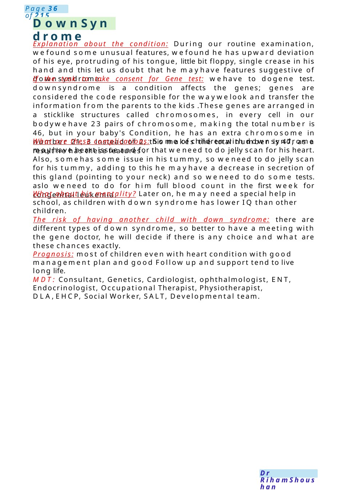
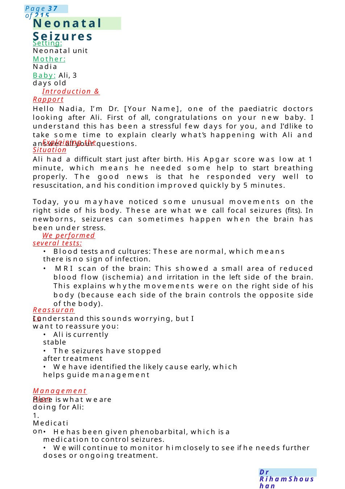

Down Syndrome
Explanation about the condition: During our routine examination, wefound some unusual features, wefound he has upward deviation of his eye, protruding of his tongue, little bit floppy, single crease in his hand and this let us doubt that he mayhave features suggestive of downsyndrome. If the task to take consent for Gene test: wehave to dogene test. downsyndrome is a condition affects the genes; genes are considered the code responsible for the waywelook and transfer the information from the parents to the kids .These genes are arranged in a sticklike structures called chromosomes, in every cell in our bodywehave…
Scenario Summary
Explanation about the condition: During our routine examination, wefound some unusual features, wefound he has upward deviation of his eye, protruding of his tongue, little bit floppy, single crease in his hand and this let us doubt that he mayhave features suggestive of downsyndrome. If the task to take consent for Gene test: wehave to dogene test. downsyndrome is a condition affects the genes; genes are considered the code responsible for the waywelook and transfer the information from the parents to the kids .These genes are arranged in a sticklike structures called chromosomes, in every cell in our bodywehave…
Full Original Scenario

Down Syndrome
Explanation about the condition: During our routine examination, wefound some unusual features, wefound he has upward deviation of his eye, protruding of his tongue, little bit floppy, single crease in his hand and this let us doubt that he mayhave features suggestive of downsyndrome.
If the task to take consent for Gene test: wehave to dogene test. downsyndrome is a condition affects the genes; genes are considered the code responsible for the waywelook and transfer the information from the parents to the kids .These genes are arranged in a sticklike structures called chromosomes, in every cell in our bodywehave 23 pairs of chromosome, making the total number is 46, but in your baby's Condition, he has an extra chromosome in number 21, 3 instead of 2, this makes the total number is 47, as a result he has these features .
What are these complications: Some of children with downsyndrome mayhave heart issue and for that weneed to do jelly scan for his heart. Also, somehas some issue in his tummy, so weneed to do jelly scan for his tummy, adding to this he mayhave a decrease in secretion of this gland (pointing to your neck) and so weneed to do some tests. aslo weneed to do for him full blood count in the first week for congenital leukemia.
What about his mentality? Later on, he may need a special help in school, as children with down syndrome has lower IQ than other children.
The risk of having another child with down syndrome: there are different types of down syndrome, so better to have a meeting with the gene doctor, he will decide if there is any choice and what are these chances exactly.
Prognosis: most of children even with heart condition with good management plan and good Follow up and support tend to live long life.
MDT: Consultant, Genetics, Cardiologist, ophthalmologist, ENT, Endocrinologist, Occupational Therapist, Physiotherapist, DLA,EHCP, Social Worker, SALT, Developmental team.

Neonatal Seizures
Setting: Neonatal unit
Mother: Nadia
Baby: Ali, 3 days old
Introduction & Rapport
Hello Nadia, I’m Dr. [Your Name], one of the paediatric doctors looking after Ali. First of all, congratulations on your new baby. I understand this has been a stressful few days for you, and I’dlike to take some time to explain clearly what’s happening with Ali and answer all your questions.
Explaining the Situation
Ali had a difficult start just after birth. His Apgar score was low at 1 minute, which means he needed some help to start breathing properly. The good news is that he responded very well to resuscitation, and his condition improved quickly by 5 minutes.
Today, you mayhave noticed some unusual movements on the right side of his body. These are what we call focal seizures (fits). In newborns, seizures can sometimes happen when the brain has been under stress.
We performed several tests:
- Blood tests and cultures: These are normal, which means there is no sign of infection.
- MRI scan of the brain: This showed a small area of reduced blood flow (ischemia) and irritation in the left side of the brain. This explains whythe movements were on the right side of his body (because each side of the brain controls the opposite side of the body).
Reassurance
I understand this sounds worrying, but I want to reassure you:
- Ali is currently stable
- The seizures have stopped after treatment
- Wehave identified the likely cause early, which helps guide management
Management Plan
Here is what we are doing for Ali:
1. Medication
- Hehas been given phenobarbital, which is a medication to control seizures.
- Wewill continue to monitor himclosely to see if he needs further doses or ongoing treatment.